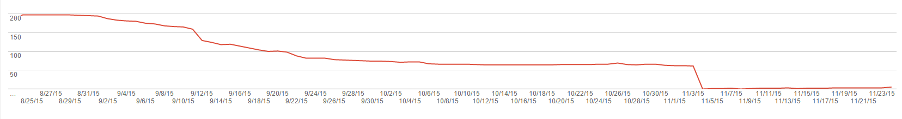
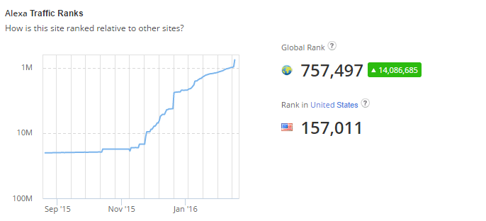
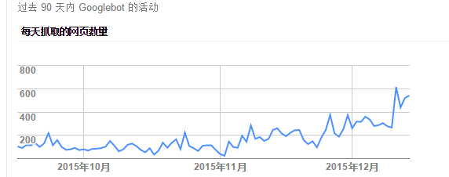

<!DOCTYPE html>


<html lang="en">


<head>
  <meta charset="utf-8" />
   
  <meta name="keywords" content="c,c++,java,python,leetcode,algorithm,reading,life,moods,machine-learning,data-mining,deep-learning,AI" />
   
  <meta name="description" content="一个分享机器学习、算法与数据结构，个人学习心得、读书笔记、生活的博客。" />
  
  <meta name="viewport" content="width=device-width, initial-scale=1, maximum-scale=1" />
  <title>
    本博客 SEO实战记录 |  一个分享机器学习、算法与数据结构，个人学习心得、读书笔记、生活的博客。
  </title>
  <meta name="generator" content="hexo-theme-ayer">
  
  <link rel="shortcut icon" href="/favicon.ico" />
  
  
<link rel="stylesheet" href="/dist/main.css">

  
<link rel="stylesheet" href="https://cdn.jsdelivr.net/gh/Shen-Yu/cdn/css/remixicon.min.css">

  
<link rel="stylesheet" href="/css/custom.css">

  
  
<script src="https://cdn.jsdelivr.net/npm/pace-js@1.0.2/pace.min.js"></script>

  
  

  

</head>

</html>

<body>
  <div id="app">
    
      
    <main class="content on">
      <section class="outer">
  <article
  id="post-seo-in-action"
  class="article article-type-post"
  itemscope
  itemprop="blogPost"
  data-scroll-reveal
>
  <div class="article-inner">
    
    <header class="article-header">
       
<h1 class="article-title sea-center" style="border-left:0" itemprop="name">
  本博客 SEO实战记录
</h1>
 

    </header>
     
    <div class="article-meta">
      <a href="/seo-in-action/" class="article-date">
  <time datetime="2015-12-17T15:05:28.000Z" itemprop="datePublished">2015-12-17</time>
</a> 
      
  <div class="article-category">
    <a class="article-category-link" href="/categories/others/">others</a> / <a class="article-category-link" href="/categories/others/%E5%BB%BA%E7%AB%99%E7%BB%8F%E9%AA%8C/">建站经验</a>
  </div>
 
       
        
<div class="word_count">
    <span class="post-time">
        <span class="post-meta-item-icon">
            <i class="ri-quill-pen-line"></i>
            <span class="post-meta-item-text"> Word count:</span>
            <span class="post-count">1.3k</span>
        </span>
    </span>

    <span class="post-time">
        &nbsp; | &nbsp;
        <span class="post-meta-item-icon">
            <i class="ri-book-open-line"></i>
            <span class="post-meta-item-text"> Reading time≈</span>
            <span class="post-count">6 min</span>
        </span>
    </span>
</div>

      
       
        <div class="word_count">
    <span class="post-meta-item-icon">
        <i class="ri-eye-fill"></i> 
        阅读数:<span id="/seo-in-action/" data-flag-title="本博客 SEO实战记录" class="leancloud_visitors">0</span>次
    </span>
</div>
      
    </div>
      
    <div class="tocbot"></div>


  
    <div class="article-entry" itemprop="articleBody">
       
  <p>本文记录本博客SEO的一些优化方法。不定期更新。<br><a id="more"></a></p>
<h2 id="YOAST-SEO插件"><a href="#YOAST-SEO插件" class="headerlink" title="YOAST SEO插件"></a>YOAST SEO插件</h2><p>wordpress 下 强烈建议安装。</p>
<p>可以帮你修改每页的标题、写博客的时候计算关键词、生成Sitemap等等。</p>
<h2 id="重定向wordpress-固定链接"><a href="#重定向wordpress-固定链接" class="headerlink" title="重定向wordpress 固定链接"></a>重定向wordpress 固定链接</h2><p>之前的网址格式是<code>www.hrwhisper.me/archives/id</code><br>之后改为了<code>www.hrwhisper.me/title</code><br>那么，原来的就一片404了。<br>如下：（google search console）</p>
<p><br>怎么办呢?答案是用.htaccess进行重定向：</p>
<ul>
<li><p><a target="_blank" rel="noopener" href="http://hrwhisper.me/archives/1484">http://hrwhisper.me/archives/1484</a></p>
<ul>
<li><code>RedirectMatch 301 ^/archives/([0-9]*)$  https://www.hrwhisper.me/?p=$1</code></li>
</ul>
</li>
<li><p><a target="_blank" rel="noopener" href="http://hrwhisper.me/archives/date/2​015/05/02">http://hrwhisper.me/archives/date/2​015/05/02</a></p>
<ul>
<li><code>RedirectMatch 301 ^/archives/date/([0-9]*)/([0-9]*)/([0-9]*)$ https://www.hrwhisper.me/$1/$2/$3/</code></li>
</ul>
</li>
<li><p><a target="_blank" rel="noopener" href="http://hrwhisper.me/archives/tag/bi​t-manipulation">http://hrwhisper.me/archives/tag/bi​t-manipulation</a></p>
<ul>
<li><code>RedirectMatch 301 ^/archives/tag/(.*)$ https://www.hrwhisper.me/tag/$1/</code></li>
</ul>
</li>
<li><p>还有<a target="_blank" rel="noopener" href="https://www.hrwhisper.me/archives/category/code/的，可以和上面的合并">https://www.hrwhisper.me/archives/category/code/的，可以和上面的合并</a></p>
<ul>
<li><code>RedirectMatch 301 ^/archives/(.*)$ https://www.hrwhisper.me/$1/</code></li>
</ul>
</li>
</ul>
<p>注意：中文的URL会被自动decode，也就是说你在.htaccess中只要写中文即可。</p>
<ul>
<li><code>RedirectMatch 301 ^/关于我$ https://www.hrwhisper.me/about-me/</code></li>
</ul>
<p>最后，我的部分.htaccess:</p>
<figure class="highlight plain"><table><tr><td class="gutter"><pre><span class="line">1</span><br><span class="line">2</span><br><span class="line">3</span><br><span class="line">4</span><br><span class="line">5</span><br><span class="line">6</span><br><span class="line">7</span><br><span class="line">8</span><br><span class="line">9</span><br><span class="line">10</span><br><span class="line">11</span><br><span class="line">12</span><br><span class="line">13</span><br><span class="line">14</span><br><span class="line">15</span><br><span class="line">16</span><br></pre></td><td class="code"><pre><span class="line">RedirectMatch 301 ^&#x2F;archives&#x2F;([0-9]+)$ https:&#x2F;&#x2F;www.hrwhisper.me&#x2F;?p&#x3D;$1</span><br><span class="line">RedirectMatch 301 ^&#x2F;archives&#x2F;date&#x2F;([0-9]+)&#x2F;([0-9]+)$ https:&#x2F;&#x2F;www.hrwhisper.me&#x2F;$1&#x2F;$2&#x2F;</span><br><span class="line">RedirectMatch 301 ^&#x2F;archives&#x2F;date&#x2F;([0-9]+)&#x2F;([0-9]+)&#x2F;page&#x2F;(.*)$ https:&#x2F;&#x2F;www.hrwhisper.me&#x2F;$1&#x2F;$2&#x2F;page&#x2F;$3&#x2F;</span><br><span class="line">RedirectMatch 301 ^&#x2F;archives&#x2F;date&#x2F;([0-9]+)&#x2F;([0-9]+)&#x2F;([0-9]+)$ https:&#x2F;&#x2F;www.hrwhisper.me&#x2F;$1&#x2F;$2&#x2F;$3&#x2F;</span><br><span class="line">RedirectMatch 301 ^&#x2F;archives&#x2F;date&#x2F;([0-9]+)&#x2F;([0-9]+)&#x2F;([0-9]+)&#x2F;page&#x2F;(.*)$ https:&#x2F;&#x2F;www.hrwhisper.me&#x2F;$1&#x2F;$2&#x2F;$3&#x2F;page&#x2F;$4&#x2F;</span><br><span class="line">RedirectMatch 301 ^&#x2F;archives&#x2F;(.*)$ https:&#x2F;&#x2F;www.hrwhisper.me&#x2F;$1&#x2F;</span><br><span class="line"></span><br><span class="line">RedirectMatch 301 ^&#x2F;tag&#x2F;图像处理&#x2F;$ https:&#x2F;&#x2F;www.hrwhisper.me&#x2F;tag&#x2F;image-processing&#x2F;</span><br><span class="line">RedirectMatch 301 ^&#x2F;tag&#x2F;爬虫&#x2F;$ https:&#x2F;&#x2F;www.hrwhisper.me&#x2F;tag&#x2F;crawler&#x2F;</span><br><span class="line">RedirectMatch 301 ^&#x2F;tag&#x2F;python库&#x2F;$ https:&#x2F;&#x2F;www.hrwhisper.me&#x2F;tag&#x2F;python-package&#x2F;</span><br><span class="line">RedirectMatch 301 ^&#x2F;tag&#x2F;心情&#x2F;$ https:&#x2F;&#x2F;www.hrwhisper.me&#x2F;tag&#x2F;moods&#x2F;</span><br><span class="line">RedirectMatch 301 ^&#x2F;mymood&#x2F;$ https:&#x2F;&#x2F;www.hrwhisper.me&#x2F;tag&#x2F;moods&#x2F;</span><br><span class="line"></span><br><span class="line">RedirectMatch 301 ^&#x2F;tag&#x2F;环境配置&#x2F;$ https:&#x2F;&#x2F;www.hrwhisper.me&#x2F;tag&#x2F;running-environment&#x2F;</span><br><span class="line">RedirectMatch 301 ^&#x2F;关于&#x2F;$ https:&#x2F;&#x2F;www.hrwhisper.me&#x2F;about-me&#x2F;</span><br><span class="line">RedirectMatch 301 ^&#x2F;关于我$ https:&#x2F;&#x2F;www.hrwhisper.me&#x2F;about-me&#x2F;</span><br></pre></td></tr></table></figure>
<p>参考： <a target="_blank" rel="noopener" href="https://perishablepress.com/redirect-wordpress-date-archives-htaccess/">https://perishablepress.com/redirect-wordpress-date-archives-htaccess/</a></p>
<h2 id="Sitemap提交"><a href="#Sitemap提交" class="headerlink" title="Sitemap提交"></a>Sitemap提交</h2><ul>
<li><a target="_blank" rel="noopener" href="https://www.google.co.jp/url?sa=t&amp;rct=j&amp;q=&amp;esrc=s&amp;source=web&amp;cd=1&amp;cad=rja&amp;uact=8&amp;ved=0ahUKEwiss6iI99jJAhXRcI4KHbuJBSwQFggdMAA&amp;url=https%3A%2F%2Fwww.google.com%2Fwebmasters%2Ftools&amp;usg=AFQjCNHqwDOfb6H9OJMj1ATaXnSnHDCleg">google</a></li>
<li><a target="_blank" rel="noopener" href="http://www.bing.com/toolbox/webmaster/">bing</a></li>
<li><a target="_blank" rel="noopener" href="http://zhanzhang.baidu.com/?castk=LTE%3D">baidu</a>  ：虽然提交了并没什么卵用。。。感觉还是每天抓取频率太低。可能和百度看不上本站有关，观察中。</li>
<li><a target="_blank" rel="noopener" href="http://zhanzhang.haosou.com/">360</a></li>
<li><a target="_blank" rel="noopener" href="http://zhanzhang.sogou.com/index.php/site/index">sougou</a>  ：搜狗绝对是看不上本站。。</li>
</ul>
<p>除此之外robots.txt 声明sitemap位置</p>
<figure class="highlight plain"><table><tr><td class="gutter"><pre><span class="line">1</span><br><span class="line">2</span><br><span class="line">3</span><br><span class="line">4</span><br><span class="line">5</span><br><span class="line">6</span><br></pre></td><td class="code"><pre><span class="line">Sitemap: https:&#x2F;&#x2F;www.hrwhisper.me&#x2F;post-sitemap.xml</span><br><span class="line">Sitemap: https:&#x2F;&#x2F;www.hrwhisper.me&#x2F;post_tag-sitemap.xml</span><br><span class="line">Sitemap: https:&#x2F;&#x2F;www.hrwhisper.me&#x2F;category-sitemap.xml</span><br><span class="line">Sitemap: https:&#x2F;&#x2F;www.hrwhisper.me&#x2F;page-sitemap.xml</span><br><span class="line">User-agent: *</span><br><span class="line">Disallow: &#x2F;wp-admin&#x2F;</span><br></pre></td></tr></table></figure>
<p>参考  <a target="_blank" rel="noopener" href="http://www.sitemaps.org/protocol.html#submit_robots">http://www.sitemaps.org/protocol.html#submit_robots</a></p>
<h2 id="原创保护"><a href="#原创保护" class="headerlink" title="原创保护"></a>原创保护</h2><p>每篇文章后加入如下：</p>
<figure class="highlight plain"><table><tr><td class="gutter"><pre><span class="line">1</span><br><span class="line">2</span><br><span class="line">3</span><br><span class="line">4</span><br></pre></td><td class="code"><pre><span class="line">echo &#39;本博客若无特殊说明则由 &lt;a href&#x3D;&quot;&#39;.get_site_url().&#39;&quot; title&#x3D;&quot;&#39;. get_the_author().&#39;&quot;&gt;&#39;. get_the_author() .&#39;&lt;&#x2F;a&gt; 原创发布&lt;br&#x2F;&gt;&#39;;</span><br><span class="line">echo &#39;转载请点名出处：&lt;a href&#x3D;&quot;&#39;.get_site_url().&#39;&quot; title&#x3D;&quot;&#39;.get_bloginfo().&#39;&quot;&gt;&#39; .get_bloginfo().&#39;&lt;&#x2F;a&gt; &gt; &#39;;</span><br><span class="line">echo &#39;&lt;a href&#x3D;&quot;&#39;.get_permalink().&#39;&quot; title&#x3D;&quot;&#39;.get_the_title().&#39;&quot;&gt;&#39; .get_the_title().&#39;&lt;&#x2F;a&gt;&lt;br&#x2F;&gt;&#39;;</span><br><span class="line">echo &#39;本文地址：&lt;a href&#x3D;&quot;&#39;.get_permalink().&#39;&quot; title&#x3D;&quot;&#39;.get_the_title().&#39;&quot;&gt;&#39; .get_permalink().&#39;&lt;&#x2F;a&gt;&#39;;</span><br></pre></td></tr></table></figure>
<h2 id="nofollow使用"><a href="#nofollow使用" class="headerlink" title="nofollow使用"></a>nofollow使用</h2><ul>
<li>底部sns nofollow了，这个只是提供联系方式，和网站内容无关。</li>
<li>每篇文章 continue reading 也是，这个锚文本没意义。</li>
</ul>
<h2 id="W3C认证"><a href="#W3C认证" class="headerlink" title="W3C认证"></a>W3C认证</h2><p><a target="_blank" rel="noopener" href="https://validator.w3.org/">W3C验证地址传送门</a></p>
<p>以修改多说为例：</p>
<blockquote>
<p>_Error: Attribute pubdate not allowed on element time at this point._<br> _From line 178, column 120; to line 178, column 170_<br> _ment-106”&gt;<time pubdate datetime="2015-07-01T22:17:13+00:00">2015年7_<br> _Attributes for element time:_</p>
</blockquote>
<p>在duoshuo/comments-seo.php</p>
<figure class="highlight html"><table><tr><td class="gutter"><pre><span class="line">1</span><br><span class="line">2</span><br></pre></td><td class="code"><pre><span class="line"><span class="tag">&lt;<span class="name">time</span> <span class="attr">pubdate</span> <span class="attr">datetime</span>=<span class="string">”%2$s”</span>&gt;</span>%3$s<span class="tag">&lt;/<span class="name">time</span>&gt;</span><span class="tag">&lt;/<span class="name">a</span>&gt;</span>’,</span><br><span class="line">改为<span class="tag">&lt;<span class="name">time</span> <span class="attr">datetime</span>=<span class="string">”%2$s”</span>&gt;</span>%3$s<span class="tag">&lt;/<span class="name">time</span>&gt;</span><span class="tag">&lt;/<span class="name">a</span>&gt;</span>’,</span><br></pre></td></tr></table></figure>
<blockquote>
<p>_Warning: The name attribute is obsolete. Consider putting an id attribute on the nearest container instead._<br> _From line 342, column 10; to line 342, column 28_<br>_&lt;/script&gt;<a name="comments"></a>_</p>
</blockquote>
<figure class="highlight html"><table><tr><td class="gutter"><pre><span class="line">1</span><br><span class="line">2</span><br><span class="line">3</span><br></pre></td><td class="code"><pre><span class="line"><span class="tag">&lt;/<span class="name">script</span>&gt;</span><span class="tag">&lt;<span class="name">a</span> <span class="attr">name</span>=<span class="string">”comments”</span>&gt;</span><span class="tag">&lt;/<span class="name">a</span>&gt;</span></span><br><span class="line">duoshuo/comments.php</span><br><span class="line">删掉<span class="tag">&lt;<span class="name">a</span> <span class="attr">name</span>=<span class="string">”comments”</span>&gt;</span><span class="tag">&lt;/<span class="name">a</span>&gt;</span></span><br></pre></td></tr></table></figure>
<blockquote>
<p>_Warning: Article lacks heading. Consider using h2-h6 elements to add identifying headings to all articles._<br>_From line 376, column 4; to line 376, column 45_<br>_-187”&gt; <article id="comment-187" class="comment">_</p>
</blockquote>
<figure class="highlight"><table><tr><td class="gutter"><pre><span class="line">1</span><br><span class="line">2</span><br><span class="line">3</span><br></pre></td><td class="code"><pre><span class="line">duoshuo/comments-seo.php</span><br><span class="line">&lt;article id=”comment-&lt;?php comment_ID(); ?&gt;” class=”comment”&gt;</span><br><span class="line">改为 &lt;div id=”comment-&lt;?php comment_ID(); ?&gt;” class=”comment”&gt;</span><br></pre></td></tr></table></figure>
<p>ps:博主blog除了个别多说评论页面有表情的提示无alt属性没通过验证外，其他的均通过W3C验证。</p>
<h2 id="移动自适应"><a href="#移动自适应" class="headerlink" title="移动自适应"></a>移动自适应</h2><p>原来用 wptouch pro 现在已经响应式主题。<br>根据百度建议加上如下标志，帮助百度理解页面适用于PC和手机</p>
<figure class="highlight html"><table><tr><td class="gutter"><pre><span class="line">1</span><br></pre></td><td class="code"><pre><span class="line"><span class="tag">&lt;<span class="name">meta</span> <span class="attr">name</span>=<span class="string">&quot;applicable-device&quot;</span><span class="attr">content</span>=<span class="string">&quot;pc,mobile&quot;</span>&gt;</span></span><br></pre></td></tr></table></figure>
<p>可以在google search console上查看移动设备的适应性</p>
<h2 id="Https"><a href="#Https" class="headerlink" title="Https"></a>Https</h2><p>开启了全站https，搜索引擎把HTTPS作为一个排名的因素</p>
<h2 id="效果"><a href="#效果" class="headerlink" title="效果"></a>效果</h2><p>alexa排名，从优化11月1700W开始到现在76W</p>
<p></p>
<p>google bot也反应了一定的效果。。</p>
<p></p>
<h2 id="接下来"><a href="#接下来" class="headerlink" title="接下来"></a>接下来</h2><p>主要是丰富网站内容吧~</p>
<p>还有好多可以分享的东西~不仅仅是leetcode</p>
<p>ps:可以看该下网址增加SEO知识： <a target="_blank" rel="noopener" href="https://www.hrwhisper.me/seo-theory/">SEO 基础</a></p>
 
      <!-- reward -->
      
      <div id="reword-out">
        <div id="reward-btn">
          Donate
        </div>
      </div>
      
    </div>
    

    <!-- copyright -->
    
    <div class="declare">
      <ul class="post-copyright">
        <li>
          <i class="ri-copyright-line"></i>
          <strong>Copyright： </strong>
          
          Copyright is owned by the author. For commercial reprints, please contact the author for authorization. For non-commercial reprints, please indicate the source.
          
        </li>
      </ul>
    </div>
    
    <footer class="article-footer">
       
<div class="share-btn">
      <span class="share-sns share-outer">
        <i class="ri-share-forward-line"></i>
        分享
      </span>
      <div class="share-wrap">
        <i class="arrow"></i>
        <div class="share-icons">
          
          <a class="weibo share-sns" href="javascript:;" data-type="weibo">
            <i class="ri-weibo-fill"></i>
          </a>
          <a class="weixin share-sns wxFab" href="javascript:;" data-type="weixin">
            <i class="ri-wechat-fill"></i>
          </a>
          <a class="qq share-sns" href="javascript:;" data-type="qq">
            <i class="ri-qq-fill"></i>
          </a>
          <a class="douban share-sns" href="javascript:;" data-type="douban">
            <i class="ri-douban-line"></i>
          </a>
          <!-- <a class="qzone share-sns" href="javascript:;" data-type="qzone">
            <i class="icon icon-qzone"></i>
          </a> -->
          
          <a class="facebook share-sns" href="javascript:;" data-type="facebook">
            <i class="ri-facebook-circle-fill"></i>
          </a>
          <a class="twitter share-sns" href="javascript:;" data-type="twitter">
            <i class="ri-twitter-fill"></i>
          </a>
          <a class="google share-sns" href="javascript:;" data-type="google">
            <i class="ri-google-fill"></i>
          </a>
        </div>
      </div>
</div>

<div class="wx-share-modal">
    <a class="modal-close" href="javascript:;"><i class="ri-close-circle-line"></i></a>
    <p>扫一扫，分享到微信</p>
    <div class="wx-qrcode">
      
    </div>
</div>

<div id="share-mask"></div>  
  <ul class="article-tag-list" itemprop="keywords"><li class="article-tag-list-item"><a class="article-tag-list-link" href="/tags/SEO/" rel="tag">SEO</a></li><li class="article-tag-list-item"><a class="article-tag-list-link" href="/tags/wordpress/" rel="tag">wordpress</a></li></ul>

    </footer>
  </div>

   
  <nav class="article-nav">
    
      <a href="/after-i-get-all-photos-from-university/" class="article-nav-link">
        <strong class="article-nav-caption">上一篇</strong>
        <div class="article-nav-title">
          
            在我爬了全校的照片之后........
          
        </div>
      </a>
    
    
      <a href="/seo-theory/" class="article-nav-link">
        <strong class="article-nav-caption">下一篇</strong>
        <div class="article-nav-title">SEO 基础</div>
      </a>
    
  </nav>

   
<!-- valine评论 -->
<div id="vcomments-box">
  <div id="vcomments"></div>
</div>
<script src="//cdn1.lncld.net/static/js/3.0.4/av-min.js"></script>
<script src="https://cdn.jsdelivr.net/npm/valine@1.4.14/dist/Valine.min.js"></script>
<script>
  new Valine({
    el: "#vcomments",
    app_id: "fVcjWMD8aI6F0qEfKdUaHa4f-gzGzoHsz",
    app_key: "b26lBsbwmVyxTSnNrsBrnv3U",
    path: window.location.pathname,
    avatar: "monsterid",
    placeholder: "给我的文章加点评论吧~",
    recordIP: true,
  });
  const infoEle = document.querySelector("#vcomments .info");
  if (infoEle && infoEle.childNodes && infoEle.childNodes.length > 0) {
    infoEle.childNodes.forEach(function (item) {
      item.parentNode.removeChild(item);
    });
  }
</script>
<style>
  #vcomments-box {
    padding: 5px 30px;
  }

  @media screen and (max-width: 800px) {
    #vcomments-box {
      padding: 5px 0px;
    }
  }

  #vcomments-box #vcomments {
    background-color: #fff;
  }

  .v .vlist .vcard .vh {
    padding-right: 20px;
  }

  .v .vlist .vcard {
    padding-left: 10px;
  }
</style>

 
     
</article>

</section>
      <footer class="footer">
  <div class="outer">
    <ul>
      <li>
        Copyrights &copy;
        2013-2020
        <i class="ri-heart-fill heart_icon"></i> hrwhisper
      </li>
    </ul>
    <ul>
      <li>
        
        
        
        Powered by <a href="https://hexo.io" target="_blank">Hexo</a>
        <span class="division">|</span>
        Theme - <a href="https://github.com/Shen-Yu/hexo-theme-ayer" target="_blank">Ayer</a>
        
      </li>
    </ul>
    <ul>
      <li>
        
        
        <span>
  <span><i class="ri-user-3-fill"></i>Visitors:<span id="busuanzi_value_site_uv"></span></s>
  <span class="division">|</span>
  <span><i class="ri-eye-fill"></i>Views:<span id="busuanzi_value_page_pv"></span></span>
</span>
        
      </li>
    </ul>
    <ul>
      
    </ul>
    <ul>
      
    </ul>
    <ul>
      <li>
        <!-- cnzz统计 -->
        
      </li>
    </ul>
  </div>
</footer>

 
  <script src="https://cdn.bootcss.com/jquery/3.2.1/jquery.min.js"></script>
<script src="//cdn1.lncld.net/static/js/2.5.0/av-min.js"></script>
<script type="text/javascript">
var leancloud_app_id  = 'fVcjWMD8aI6F0qEfKdUaHa4f-gzGzoHsz';
var leancloud_app_key = 'b26lBsbwmVyxTSnNrsBrnv3U';

AV.init({
    appId: leancloud_app_id,
    appKey: leancloud_app_key
});

// https://leancloud.cn/docs/leanstorage_guide-js.html#hash1873238850
function showTime(Counter) {
  console.log("show time");
	let query = new AV.Query(Counter);
  query.greaterThanOrEqualTo("time", 0);		
  query.find().then((results) => {
      if (results.length > 0) {
        let data = results;
        $('.leancloud_visitors').each(function() {
          let url = $(this).attr('id').trim();		
          for (let i = 0; i < data.length; i++) {
            let object = data[i];
            let content = object.get('time');
            let _url = object.get('url');
            if(url == _url){
              $(this).text(content);
            }
          }
        });
      }
  });
}

function addCount(Counter) {
  const obj = $(".leancloud_visitors");
	url = obj.attr('id').trim();
  title = obj.attr('data-flag-title').trim();

  const query = new AV.Query('Counter');
  query.equalTo("url", url);

	query.find().then((results) => {
			if (results.length > 0) {
				var counter = results[0];
				counter.increment("time", 1);
				counter.save(null, {fetchWhenSave: true}).then(() => {
          let content = counter.get('time');
          $(document.getElementById(url)).text(content);
        }, (error)=> {
						console.log('Failed to save Visitor num, with error message: ' + error.message);
        });
			} else {
				var newcounter = new Counter();
				newcounter.set("title", title);
				newcounter.set("url", url);
        newcounter.set("time", 1);
        newcounter.save(null, {fetchWhenSave: true}).then(() => {
          var content = newcounter.get('time');
          $(document.getElementById(url)).text(content);
        }, (error)=> {
          console.log('Failed to create' + error.message);
        });
			}
	});
}

$(function() {
  var Counter = AV.Object.extend("Counter");
	if ($('.leancloud_visitors').length == 1) {
		addCount(Counter);
	} else {
	  showTime(Counter);
  }
}); 
</script>


      <div class="float_btns">
        <div class="totop" id="totop">
  <i class="ri-arrow-up-line"></i>
</div>

<div class="todark" id="todark">
  <i class="ri-moon-line"></i>
</div>

      </div>
    </main>
    <aside class="sidebar on">
      <button class="navbar-toggle"></button>
<nav class="navbar">
  
  <div class="logo">
    <a href="/"></a>
  </div>
  
  <ul class="nav nav-main">
    
    <li class="nav-item">
      <a class="nav-item-link" href="/">主页</a>
    </li>
    
    <li class="nav-item">
      <a class="nav-item-link" href="/archives">归档</a>
    </li>
    
    <li class="nav-item">
      <a class="nav-item-link" href="/categories">分类</a>
    </li>
    
    <li class="nav-item">
      <a class="nav-item-link" href="/tags">标签</a>
    </li>
    
    <li class="nav-item">
      <a class="nav-item-link" href="/blog-building">博客建设</a>
    </li>
    
    <li class="nav-item">
      <a class="nav-item-link" href="/friend-link">友链</a>
    </li>
    
    <li class="nav-item">
      <a class="nav-item-link" href="/leetcode-algorithm-solution">leetcode题解</a>
    </li>
    
    <li class="nav-item">
      <a class="nav-item-link" href="/messageboard">留言板</a>
    </li>
    
    <li class="nav-item">
      <a class="nav-item-link" href="/about-me">关于我</a>
    </li>
    
  </ul>
</nav>
<nav class="navbar navbar-bottom">
  <ul class="nav">
    <li class="nav-item">
      
      <a class="nav-item-link nav-item-search"  title="Search">
        <i class="ri-search-line"></i>
      </a>
      
      
    </li>
  </ul>
</nav>
<div class="search-form-wrap">
  <div class="local-search local-search-plugin">
  <input type="search" id="local-search-input" class="local-search-input" placeholder="Search...">
  <div id="local-search-result" class="local-search-result"></div>
</div>
</div>
    </aside>
    <script>
      if (window.matchMedia("(max-width: 768px)").matches) {
        document.querySelector('.content').classList.remove('on');
        document.querySelector('.sidebar').classList.remove('on');
      }
    </script>
    <div id="mask"></div>

<!-- #reward -->
<div id="reward">
  <span class="close"><i class="ri-close-line"></i></span>
  <p class="reward-p"><i class="ri-cup-line"></i>请我喝杯咖啡吧~</p>
  <div class="reward-box">
    
    <div class="reward-item">
      
      <span class="reward-type">支付宝</span>
    </div>
    
    
    <div class="reward-item">
      
      <span class="reward-type">微信</span>
    </div>
    
  </div>
</div>
    
<script src="/js/jquery-2.0.3.min.js"></script>


<script src="/js/lazyload.min.js"></script>

<!-- Tocbot -->


<script src="/js/tocbot.min.js"></script>

<script>
  tocbot.init({
    tocSelector: '.tocbot',
    contentSelector: '.article-entry',
    headingSelector: 'h1, h2, h3',
    hasInnerContainers: true,
    scrollSmooth: false,
	  scrollSmoothDuration: 420,
    scrollContainer: 'main',
    positionFixedSelector: '.tocbot',
    positionFixedClass: 'is-position-fixed',
    fixedSidebarOffset: 'auto',
	collapseDepth: 2,
  });
</script>

<script src="https://cdn.jsdelivr.net/npm/jquery-modal@0.9.2/jquery.modal.min.js"></script>
<link rel="stylesheet" href="https://cdn.jsdelivr.net/npm/jquery-modal@0.9.2/jquery.modal.min.css">
<script src="https://cdn.jsdelivr.net/npm/justifiedGallery@3.7.0/dist/js/jquery.justifiedGallery.min.js"></script>

<script src="/dist/main.js"></script>

<!-- ImageViewer -->

<!-- Root element of PhotoSwipe. Must have class pswp. -->
<div class="pswp" tabindex="-1" role="dialog" aria-hidden="true">

    <!-- Background of PhotoSwipe. 
         It's a separate element as animating opacity is faster than rgba(). -->
    <div class="pswp__bg"></div>

    <!-- Slides wrapper with overflow:hidden. -->
    <div class="pswp__scroll-wrap">

        <!-- Container that holds slides. 
            PhotoSwipe keeps only 3 of them in the DOM to save memory.
            Don't modify these 3 pswp__item elements, data is added later on. -->
        <div class="pswp__container">
            <div class="pswp__item"></div>
            <div class="pswp__item"></div>
            <div class="pswp__item"></div>
        </div>

        <!-- Default (PhotoSwipeUI_Default) interface on top of sliding area. Can be changed. -->
        <div class="pswp__ui pswp__ui--hidden">

            <div class="pswp__top-bar">

                <!--  Controls are self-explanatory. Order can be changed. -->

                <div class="pswp__counter"></div>

                <button class="pswp__button pswp__button--close" title="Close (Esc)"></button>

                <button class="pswp__button pswp__button--share" style="display:none" title="Share"></button>

                <button class="pswp__button pswp__button--fs" title="Toggle fullscreen"></button>

                <button class="pswp__button pswp__button--zoom" title="Zoom in/out"></button>

                <!-- Preloader demo http://codepen.io/dimsemenov/pen/yyBWoR -->
                <!-- element will get class pswp__preloader--active when preloader is running -->
                <div class="pswp__preloader">
                    <div class="pswp__preloader__icn">
                        <div class="pswp__preloader__cut">
                            <div class="pswp__preloader__donut"></div>
                        </div>
                    </div>
                </div>
            </div>

            <div class="pswp__share-modal pswp__share-modal--hidden pswp__single-tap">
                <div class="pswp__share-tooltip"></div>
            </div>

            <button class="pswp__button pswp__button--arrow--left" title="Previous (arrow left)">
            </button>

            <button class="pswp__button pswp__button--arrow--right" title="Next (arrow right)">
            </button>

            <div class="pswp__caption">
                <div class="pswp__caption__center"></div>
            </div>

        </div>

    </div>

</div>

<link rel="stylesheet" href="https://cdn.jsdelivr.net/npm/photoswipe@4.1.3/dist/photoswipe.min.css">
<link rel="stylesheet" href="https://cdn.jsdelivr.net/npm/photoswipe@4.1.3/dist/default-skin/default-skin.min.css">
<script src="https://cdn.jsdelivr.net/npm/photoswipe@4.1.3/dist/photoswipe.min.js"></script>
<script src="https://cdn.jsdelivr.net/npm/photoswipe@4.1.3/dist/photoswipe-ui-default.min.js"></script>

<script>
    function viewer_init() {
        let pswpElement = document.querySelectorAll('.pswp')[0];
        let $imgArr = document.querySelectorAll(('.article-entry img:not(.reward-img)'))

        $imgArr.forEach(($em, i) => {
            $em.onclick = () => {
                // slider展开状态
                // todo: 这样不好，后面改成状态
                if (document.querySelector('.left-col.show')) return
                let items = []
                $imgArr.forEach(($em2, i2) => {
                    let img = $em2.getAttribute('data-idx', i2)
                    let src = $em2.getAttribute('data-target') || $em2.getAttribute('src')
                    let title = $em2.getAttribute('alt')
                    // 获得原图尺寸
                    const image = new Image()
                    image.src = src
                    items.push({
                        src: src,
                        w: image.width || $em2.width,
                        h: image.height || $em2.height,
                        title: title
                    })
                })
                var gallery = new PhotoSwipe(pswpElement, PhotoSwipeUI_Default, items, {
                    index: parseInt(i)
                });
                gallery.init()
            }
        })
    }
    viewer_init()
</script>

<!-- MathJax -->

<script type="text/x-mathjax-config">
  MathJax.Hub.Config({
      tex2jax: {
          inlineMath: [ ['$','$'], ["\\(","\\)"]  ],
          processEscapes: true,
          skipTags: ['script', 'noscript', 'style', 'textarea', 'pre', 'code']
      }
  });

  MathJax.Hub.Queue(function() {
      var all = MathJax.Hub.getAllJax(), i;
      for(i=0; i < all.length; i += 1) {
          all[i].SourceElement().parentNode.className += ' has-jax';
      }
  });
</script>

<script src="https://cdn.jsdelivr.net/npm/mathjax@2.7.6/unpacked/MathJax.js?config=TeX-AMS-MML_HTMLorMML"></script>
<script>
  var ayerConfig = {
    mathjax: true
  }
</script>

<!-- Katex -->

<!-- busuanzi  -->


<script src="/js/busuanzi-2.3.pure.min.js"></script>


<!-- ClickLove -->

<!-- ClickBoom1 -->

<!-- ClickBoom2 -->

<!-- CodeCopy -->


<link rel="stylesheet" href="/css/clipboard.css">

<script src="https://cdn.jsdelivr.net/npm/clipboard@2/dist/clipboard.min.js"></script>
<script>
  function wait(callback, seconds) {
    var timelag = null;
    timelag = window.setTimeout(callback, seconds);
  }
  !function (e, t, a) {
    var initCopyCode = function(){
      var copyHtml = '';
      copyHtml += '<button class="btn-copy" data-clipboard-snippet="">';
      copyHtml += '<i class="ri-file-copy-2-line"></i><span>COPY</span>';
      copyHtml += '</button>';
      $(".highlight .code pre").before(copyHtml);
      $(".article pre code").before(copyHtml);
      var clipboard = new ClipboardJS('.btn-copy', {
        target: function(trigger) {
          return trigger.nextElementSibling;
        }
      });
      clipboard.on('success', function(e) {
        let $btn = $(e.trigger);
        $btn.addClass('copied');
        let $icon = $($btn.find('i'));
        $icon.removeClass('ri-file-copy-2-line');
        $icon.addClass('ri-checkbox-circle-line');
        let $span = $($btn.find('span'));
        $span[0].innerText = 'COPIED';
        
        wait(function () { // 等待两秒钟后恢复
          $icon.removeClass('ri-checkbox-circle-line');
          $icon.addClass('ri-file-copy-2-line');
          $span[0].innerText = 'COPY';
        }, 2000);
      });
      clipboard.on('error', function(e) {
        e.clearSelection();
        let $btn = $(e.trigger);
        $btn.addClass('copy-failed');
        let $icon = $($btn.find('i'));
        $icon.removeClass('ri-file-copy-2-line');
        $icon.addClass('ri-time-line');
        let $span = $($btn.find('span'));
        $span[0].innerText = 'COPY FAILED';
        
        wait(function () { // 等待两秒钟后恢复
          $icon.removeClass('ri-time-line');
          $icon.addClass('ri-file-copy-2-line');
          $span[0].innerText = 'COPY';
        }, 2000);
      });
    }
    initCopyCode();
  }(window, document);
</script>


<!-- CanvasBackground -->


    
  </div>
</body>

</html>